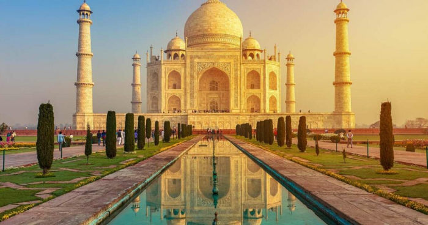

من أشهر الأماكن السياحية في باريس، ويتميز بأنه أفضل مكان تم بناؤه وي تكون من عدة مستويات الأول والثاني والثالث، ويمكن من خلال التنزه والاستمتاع بأخ ذ مجموعة من الصور الرائعة لتوثيق تلك اللحظات.

يعتر إحدى أهم القبلات السياحية لكل مَن يزور الصين، باعتباره إح دى عجائب الدنيا السبع الجديدة، ولكن يختلف شكله في الطبيعة عن الصور التي تنشر له على مواقع التواصل الاجتماعي
هو ضريح من الرخام الأبيض العاجي على الضفة الجنوبية للنهر Yamuna في مدينة اجرا الهندية، ويضم مسجدًا ودارًا للضيافة، ويقع في حدائق رسمية يحدها من ثلاث جهات جدار مرصع، وهي إحدى القبلات السياحية الرئيسية لكل مَن يزور الهند.

هو جسر هجين معلق بالكابلات في مدينة نيويورك، ويعد من أجمل الأماكن السياحية في العالم 2021، ويمتد على النهر الشرقي بين أحياء مانهاتن وبروكلين، وكان أول جسر ثابت عبر النهر الشرقي، وكان أيضًا أطول جسر معلق في العالم في وقت افتتاحه، وهو من المعالم السياحية لكل مَن يزور نيويورك.

تعتبر هذه الجبال المذهلة من الأماكن الجذابة في الصين؛ حيث تمتاز بألوانها، من الأرجواني والأصفر والأخضر، من جرَّاء آثار المعادن داخل الحجر الرملي.

ضمن الوجهات السياحية المفضل زيارتها في شهر العسل هي موريشيوس؛ وذلك لأنها تعتبر ضمن الجزر الصغيرة التي تتميز بالاستكشاف وقضاء الرحلات البحرية والأنشطة المختلفة التي يمكن للعروسين القيام بها خلال فترة الرحلة. وتتميز موريشيوس بالشواطئ المميزة والأجواء الدافئة في الشتاء بسبب المناخ الاستوائي، لذا فهي ضمن الخيارات المثالية التي يمكن التوجه إليها في الشتاء، كما أنها مصممة خصيصًا لمن يقضون شهر العسل، بسبب الشواطئ الرملية والمنتجعات الفاخرة.

يعد أرقى وأفخم الشوارع السياحية والتجارية في العالم ومن أشهر الأماكن السياحية في باريس والعالم 2021 الذي يجذب السياح من جميع أنحاء العالم. ويحتوي على أرقى المحلات التجارية العالمية والمطاعم والمقاهي والسينمات وقاعات الموسيقى، نهاية الطريق يوجد قوس النصر أحد معالم المدينة يتميز الجزء السفلى بالعديد من الأشجار.

يخطف الحاجز المرجاني العظيم الأنفاس، فهو من إحدى الوجهات السياحية الأكثر شعبيةً، ويحتوي على أكبر شعاب مرجانية في العالم وتحيط به شواطئ مذهلة وجذابة

تعد جزيرة صقلية، أكبر جزر البحر الأبيض المتوسط، خيارًا جيدًا للسياح على الجميع زيارة صقلية، ليس فقط من أجل جمالها ولكن أيضًا بسبب قلة السياح (مقارنة بمعظم الأماكن الأخرى في ايطاليا) لتمتعها بنصيبها من العجائب الطبيعية، حيث يجذب جبل إتنا كأطول بركان نشط في أوروبا القارية، والعرض الليلي من سترومبولي، في جزر إيولايان المجاورة.

يعد المتحف من أهم المتاحف الفنية في باريس ومن أجمل الأماكن السياحية في العالم 2021؛ حيث يعتبر أكبر صالة عرض للفن عالميًا. وبه العديد من الآثار المصرية التي سرقت أثناء الحملة الفرنسية على مصر.